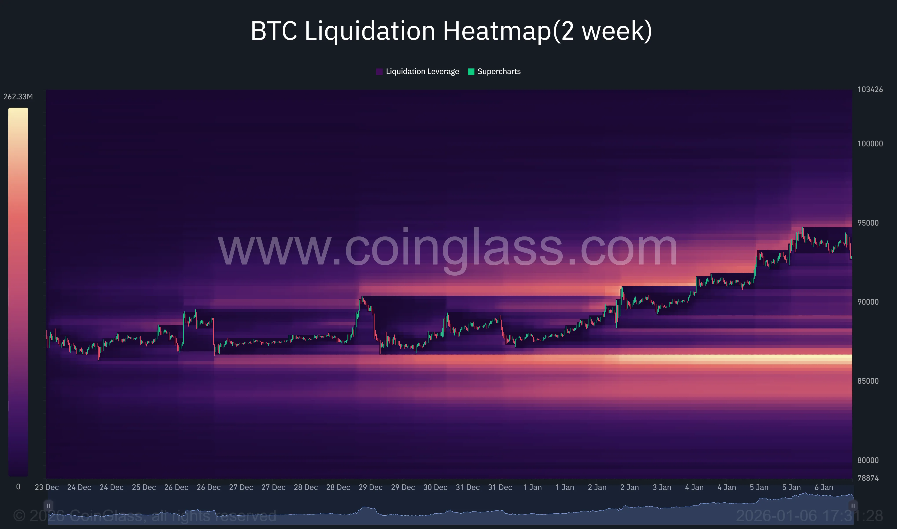
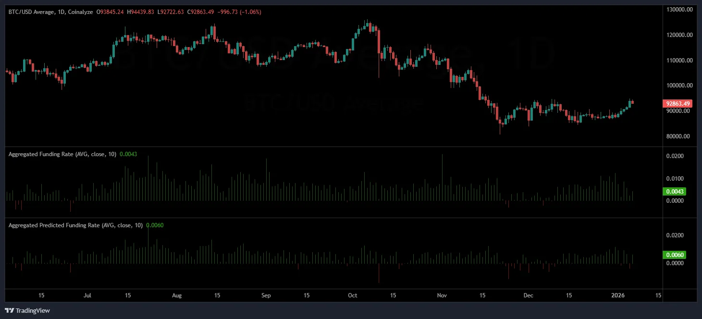
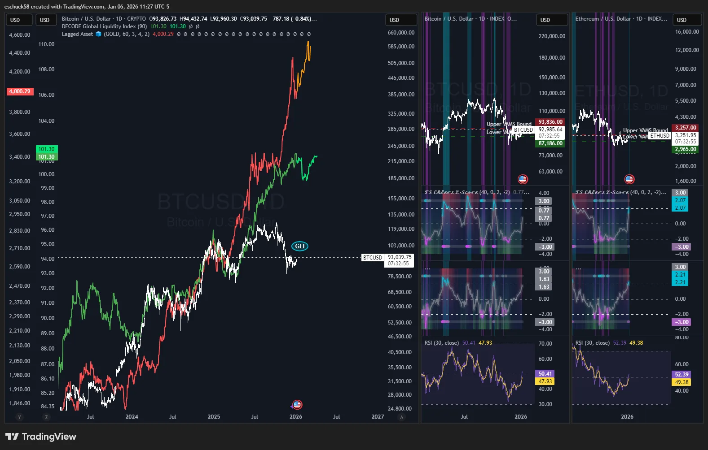
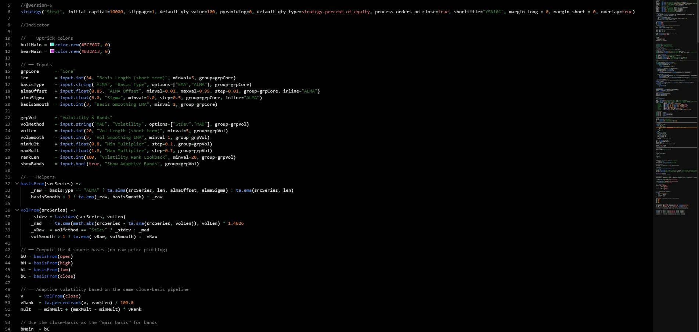
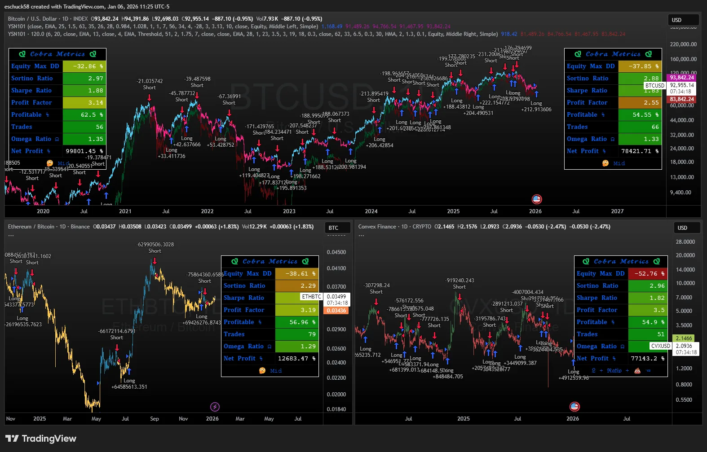

Trend-Systeme
Weekly Bias + Daily Timing: ich folge intakten Trends und arbeite mit full Cycle Valuation.
Markt-Mindset
Ich investiere systematisch, krypto-first und prozessgetrieben: klare Setups, Ratio-Charts, feste Regeln. Jeder Trade hat Hypothese, Risiko und Review.



Vor einer Position prüfe ich Makrotrends, Onchain-Daten und Relative-Strength-Charts (z. B. ETH/BTC, SOL/BTC). Daraus entsteht ein Playbook mit Einstiegs- und Exit-Levels.
Regelmäßige Reviews halten mich ehrlich: Welche Hypothesen haben funktioniert? Wo muss ich Sizing, Timing oder Bias anpassen?
Bias, Trigger und Teilverkäufe stehen fest, bevor ich klicke.
Checklisten für Entry, Ordertypen, Slippage und Alerting verhindern impulsive Trades.
Screenshots, Kennzahlen und Fehlerliste fließen in ein lernendes System.


Kern ist Trendfolge auf BTC/ETH, verstärkt durch Relative-Strength-Signale und klare Ausführungsregeln.
Weekly Bias + Daily Timing: ich folge intakten Trends und arbeite mit full Cycle Valuation.
Relative Strength Portfolio System mit Ratio-Charts (ETH/BTC, SOL/BTC, SOL/ETH), um Kapital in Stärke zu lenken.
BTC/ETH bilden die Basis. Dreht SOL relativ hoch, rotiere ich einen Teil. Smallcaps bleiben ein kleines Satelliten-Bucket.
Positionsgrößen sind vorab definiert, kein Trade ohne Plan, Drawdowns begrenzt durch aktive Wartung und kalibrierung der Strategie.
Entscheidungen basieren auf mehreren Streams. Jede Quelle beantwortet eine andere Frage.
Transaktionen, Fees, Active Addresses und Exchange-Flows zeigen, ob Nachfrage real ist.
USD-Liquidität, Realzinsen, ISM, DXY und Funding-Kosten setzen den Rahmen für Risikoappetit.
Backtests, Monte-Carlo-Simulationen und Trefferquoten zeigen die Robustheit von Setups.
Marktstruktur, Higher Highs/Lows, EMAs und Technische Indikatoren geben den Bias.
Funding, Perpetual-Basis, Options-Skews und Narrativ-Heatmap helfen für die Erwartungshaltung.
Sie messen die Qualität des Systems – ich nutze sie als Feedback, nicht als Dogma.
Verhältnis von Überschussrendite zu Volatilität.
Nutze ich, um Risiko-adjustierte Performance mit Benchmarks zu vergleichen.
Belohnt Rendite, bestraft nur Abwärtsvolatilität.
Hilft mir, drawdown-arme Phasen zu priorisieren.
Verhältnis von positiven zu negativen Renditen ober-/unterhalb einer Schwelle.
Zeigt, ob Asymmetrie wirklich zu meinen Gunsten arbeitet.
Summe der Gewinne im Verhältnis zu Verlusten.
Schneller Check, ob das Setup Netto-Wert schöpft.
Kennzahlen sind Hilfen – Kontext zählt.
So sieht ein typisches Krypto-Setup aus: Kern in BTC/ETH, taktische Rotation in SOL, kleine Experimente in Smallcaps.
Beispieldaten, um die Allokationslogik zu zeigen.
Visualisierung eines beispiel Rotations-Schemas.
Eine simple BTC-Only Strategie-Equity vs BTC Buy & Hold seit 2018. Kurzvergleich auf einen Blick.
Dieser Vergleich zeigt die Macht von Strategieanwendung im Markt. Selbstverständlich ist diese Strategie nicht vergleichbar mit den Systemen die ich aktuell nutze. Alle Strategien, die auf dieser Website zur schau gestellt sind, sind alte Systeme.

Emotion raus, Prozess rein. Daniel Kahnemans „Thinking, Fast and Slow“ erinnert mich an Biases und die Notwendigkeit klarer Regeln.
Ich handle Systeme, nicht Laune.
Entscheidungen basieren auf Regeln, nicht auf Bauchgefühl.
Jeder Trade wird notiert und ausgewertet.
Fixes Sizing, klare Exit Kriterien, kein Aufstocken in Verlierer.
Nach Regelbrüchen folgt Pause + Post-Mortem, bevor neue Orders rausgehen.
Verluste akzeptieren, Setup neu lesen, erst dann wieder handeln.
Du hast eine Investmentidee oder brauchst einen Sparringspartner? Melde dich gerne.